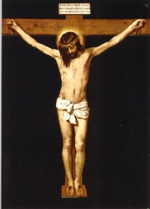
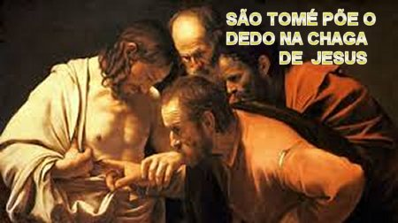
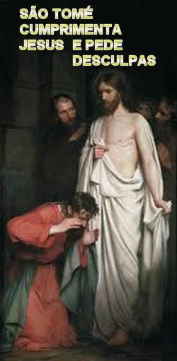
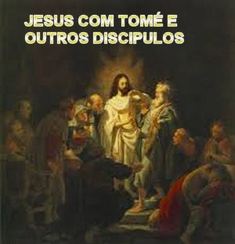
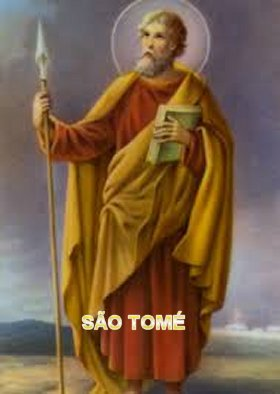
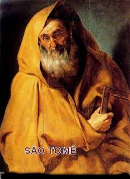

“FATOS MARCANTES”
RESSURREIÇÃO DE JESUS

Sem dúvida, o fato mais conhecido que ocorreu com São Tomé, conforme se encontra nos Evangelhos, aconteceu depois da Ressurreição de JESUS. Os Discípulos sempre se reuniam naquela sala, do andar superior de um sobrado em Jerusalém, onde fizeram a Última Ceia. Ali também se ocultavam de Herodes e dos seus comparsas, que buscavam prendê-los principalmente depois da crucificação de NOSSO SENHOR. Na tarde do dia (domingo) da Ressurreição de JESUS, ELE apareceu aos Apóstolos reunidos naquela mesma sala estando fechadas as portas, com medo dos judeus, JESUS veio e, pondo-se no meio deles, lhes disse: “Paz a vós!” (Jo 20, 19)Tendo dito isto, mostrou-lhes as MÃOS e o LADO. Os Discípulos exultaram por verem o SENHOR com todas aquelas imensas chagas que comprovavam a SUA flagelação. ELE lhes disse de novo:“Paz a vós! Como o PAI ME enviou também EU vos envio”. (Jo 20, 21) Dizendo isto, soprou sobre eles: (O sopro de JESUS simboliza o ESPÍRITO SANTO) “Recebei o ESPÍRITO SANTO.” (Jo 20, 22). “Aqueles a quem perdoardes os pecados ser-lhes-ão perdoados; aqueles aos quais não perdoardes ser-lhes-ão retidos.”(Jo 20, 23).
Todavia, Tomé não estava presente, e não viu JESUS Ressuscitado. Quando mais tarde chegou à sala onde se reuniam, os outros Discípulos lhe disseram: “Vimos o SENHOR!” Mas ele não acreditando lhes disse: “Se eu não vir em SUAS Mãos o lugar dos cravos e se não puser o meu dedo no lugar dos cravos e minha mão no seu Lado, não acreditarei.” (Jo 20, 25)
Como é fácil observar, as palavras ditas por ele foi um impulso característico de ciúme: “os outros viram e eu não vi”. Uma reação natural do espírito de um coração apaixonado, reflexo de um gênio altamente amoroso, que particularmente lhe colocava mentalmente num patamar indicando supremacia e autoridade sobre os demais, embora não houvesse graduação de comando entre eles, e nem qualquer tipo de domínio. Mas foi um fato gerado no seu íntimo que deixou em evidência o seu entusiasmo ardoroso de sempre servir e de sempre permanecer junto ao SENHOR. Coisa do espírito e do coração, mas que no conteúdo das palavras, confessou um ato de descrença, fazendo sobressair o ciúme. Entretanto, um ato sem qualquer maldade. Isto porque, ao longo da convivência com JESUS já havia demonstrado claramente a grandeza de seu amor, o seu respeito e a dimensão sem limites da sua fé no SENHOR.

Uma semana depois, ou seja, oito
dias depois, achavam-se os Discípulos, de novo, dentro daquela mesma sala, e
Tomé com eles. JESUS veio, estando as portas fechadas, pôs-se no meio deles e
disse:“Paz a vós!”
(Jo 20, 27). Disse depois a Tomé: “Põe o teu dedo aqui e vê MINHAS MÃOS! Estende a tua mão e
põe-na no MEU LADO e não sejas incrédulo, mas acredita!”(Jo 20, 28). Responde-LHE Tomé: “Meu SENHOR e Meu DEUS!”JESUS lhe diz:
“Porque 
TOMÉ CARINHOSO E CARIDOSO
São Tomé sempre revelou um profundo e fervoroso amor a JESUS, consciente de que NOSSO SENHOR era o enviado do ETERNO PAI, o verdadeiro DEUS que acreditamos, e que a SANTÍSSIMA TRINDADE nos apresenta, mas que não temos inteligência e nem capacidade para entender as dimensões da grandeza e o conteúdo desse imenso Mistério, que só nos será revelado na eternidade.
No decorrer da SUA OBRA REDENTORA, JESUS sempre repleto de bondade, fez diante dos SEUS Discípulos, muitos outros sinais, a fim de que todos acreditassem que verdadeiramente "ELE é o CRISTO, o FILHO de DEUS", e para que crendo, os Apóstolos tivessem a vida eterna em SEU Nome.
Após a Ressurreição de JESUS, no dia de Pentecostes, São Tomé junto com todos os outros Apóstolos recebeu também o DIVINO ESPÍRITO SANTO de DEUS, conforme NOSSO SENHOR havia prometido.

MINISTÉRIO APOSTÓLICO
As tradições existentes a respeito do Ministério Apostólico de São Tomé, após a Ascensão de JESUS aos Céus, não são totalmente concordes, porém as informações mais conhecidas e mais aceitas, são também as mais divulgadas e afirmam que São Tomé pregou o Evangelho na Palestina, na Síria, atravessou as terras banhadas pelos rios Tigres e Eufrates, pregou no Afeganistão, e de lá partiu para o sudoeste da Índia onde foi o primeiro a evangelizar, e onde existe até hoje núcleos cristãos, principalmente nas encostas do Malabar, que cultivam uma antiguíssima tradição do século IV, e cujos fiéis se denominam: “Cristãos de São Tomé”. E por isso também no Oriente, São Tomé era denominado o “maior dos Apóstolos”, por sua admirável evangelização em outras áreas e na região indiana do Malabar.

EVANGELIZANDO OS POVOS

Os católicos de Malabar, na Índia, cultuam São Tomé com respeito e admiração, porque foi ele na verdade e segundo a tradição, quem evangelizou toda aquela região desde o ano 52 d.C. Conservam também a história de seu martírio através dos hindus, que o feriram mortalmente com lanças por causa do veemente poder da sua pregação. Com efeito, São Tomé converteu muitas pessoas na região, fazendo nascer ali uma fervorosa comunidade cristã que já possui dois mil anos de vida e inclusive edificaram a Igreja de São Tomé. E por essa razão, foi perseguido por líderes religiosos indígenas invejosos com o progresso e com as conquistas do Apóstolo de JESUS.Para melhor evangelizar, deixou uma quantidade de discípulos no Malabar, e deslocou-se com outros discípulos para a região do Coromandel-Bengala catequizando e pregando o Evangelho com dedicação e paciência. Desenvolveu um eficiente e amoroso trabalho, ensinando e buscando unir o povo da região, fato que incomodou os nativos locais, homens violentos e de pouca instrução. Os hindus, fanáticos e contra os ensinamentos do Apóstolo de JESUS, decidiram matá-lo. Realidade que aconteceu em 72 d.C., quando eles invadiram as instalações dos cristãos e mataram São Tomé com flechadas e lanças envenenadas, próximo ao Monte Grande (Thomas Mount – Monte São Tomé), uma elevação com mil metros de altura, situado a sudoeste de Meliapor e distante 10 quilômetros do mar. Tomé morreu sem esboçar qualquer tipo de defesa, próximo a cidade de Meliapor ou Mylapore, no Estado de Kerala, onde posteriormente foi construída em sua homenagem, a “Catedral de São Tomé”.Contudo, há suposições de que ele foi sepultado pelos católicos da época no local da sua morte, e depois no século XVI, no ano 1523, quando os portugueses chegaram a Índia, encontraram o tumulo de São Tomé e então, fizeram o transladado para Meliapor, onde está construída a Catedral. No túmulo onde estava Tomé os portugueses também encontraram várias relíquias, além de diversos ossos do corpo e um pedaço de uma das lanças que o mataram. Para confirmar esta realidade, todos os antigos martirológios mencionam a ida de São Tomé à Índia, a sua pregação e o seu martírio, transpassado por lanças empunhadas por hindus.
Na continuidade dos anos, as suas relíquias foram veneradas também na Síria e depois levadas para o Ocidente e preservadas em Ortona, na Itália. O dia de São Tomé é festejado pelos católicos anualmente em 3 de Julho.


MILAGRE DO GRANDE TSUNAMI
Uma tradição local conta que diante da reclamação do povo no ano 63 d.C., dizendo que as águas do Mar da Arábia, nas Costas do Malabar sempre aumentavam de volume e causavam prejuízos as plantações e construções, São Tomé visitou a região, rezou e fincou uma estaca de madeira com boa distancia da praia e bem defronte ao mar, “afirmando que as águas do mar jamais ultrapassariam aquela marca para incomodar e causar prejuízos ao povo”. Anos posteriores, o povo católico que sempre respeitou aquele marco, construíram próximo ao local, uma Igreja em homenagem a São Tomé. Recentemente, e mais precisamente, em Dezembro de 2004, aconteceu um terrível terremoto na costa da Província de Aceh na Indonésia, terremoto muito forte com magnitude de 9,1, que fez desencadear um terrível e impressionante tsunami no Oceano Índico, que causou uma terrível destruição e morte de 226 mil pessoas em nove países, inclusive na Índia; entretanto as águas caudalosas e impetuosas, nunca ultrapassaram aquele local limitado por São Tomé com uma estaca de madeira. Em respeitosa homenagem, a partir do ano 2005, os sacerdotes hindus que eram inimigos dos cristãos, decidiram não mais perseguir e nem incomodar os cristãos daquela região.
São Tomé escreveu também diversas obras que atestam o seu eloquente e fervoroso trabalho de evangelização. As obras que relacionamos a seguir existem nos locais indicados.
1 – OS ATOS DE TOMÉ – Escrito em siríaco e o texto é conservado inclusive numa tradução grega. Também existe uma Introdução e Tradução Alemã feita por G. Bornkarnn, em Hennecke 2,297-372.
Sabe-se com certeza que existe uma tradução em inglês: THE ACTS OF THOMAS, Introduction Text – Commentary (NTS 5, Leiden 1962).
2 – O APOCALIPSE DE TOMÉ – Escrito em grego, e também, é conservada uma versão em Latim. Afirma-se, inclusive, que existe uma Introdução e Tradução Alemã feita por A. de Santos Otero, em Hennecke 2, 568-572.
3 –
EVANGELHO DE TOMÉ – De origem gnóstica, bem
como os “Os Atos de Tomé”. Um texto cóptico foi descoberto em 1945, em Nag Hammâdi,
no 
Todavia, esta palavra sincera e amorosa de Tomé fez nascer em certos corações frios e críticos de pessoas da época, gente que não conheciam e nem amavam JESUS, e em tom de crítica passaram a expressar uma abominável zombaria dizendo: “JESUS possuiria uma Natureza Humana, ou seria unicamente um DEUS encarnado, ou seria homem e DEUS ao mesmo tempo?”Estas “estranhas dúvidas”, provocadas para fazer deboche da fervorosa e amorosa palavra de Tomé diante de JESUS, fez nascer um veneno maior que cresceu e ganhou força com Eutiques em 442, obrigando a Igreja a se manifestar. E isto aconteceu no Concílio Ecumênico de Calcedônia no ano 451 (desde o dia 8 de Outubro a 1º de Novembro), onde participaram mais de 200 Bispos de muitas nações. A doutrina de Eutiques foi condenada, assim como a absurda heresia Ariana, e o Concílio Ecumênico de Calcedônia oficialmente decretou para alegria e satisfações de todos os cristãos: “CRISTO tem duas Naturezas: a Natureza Humana e a Natureza Divina”.
Evidentemente este acontecimento foi definitivo e se tornou forte obstáculo aos pretensiosos heresiarcas, fazendo cessar e calar sem demora, o absurdo palavreado de muitos hereges e de todos aqueles inimigos da fé cristã.